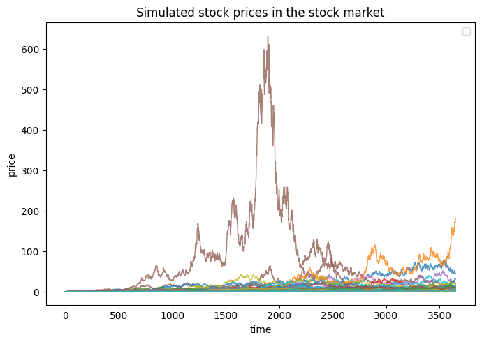
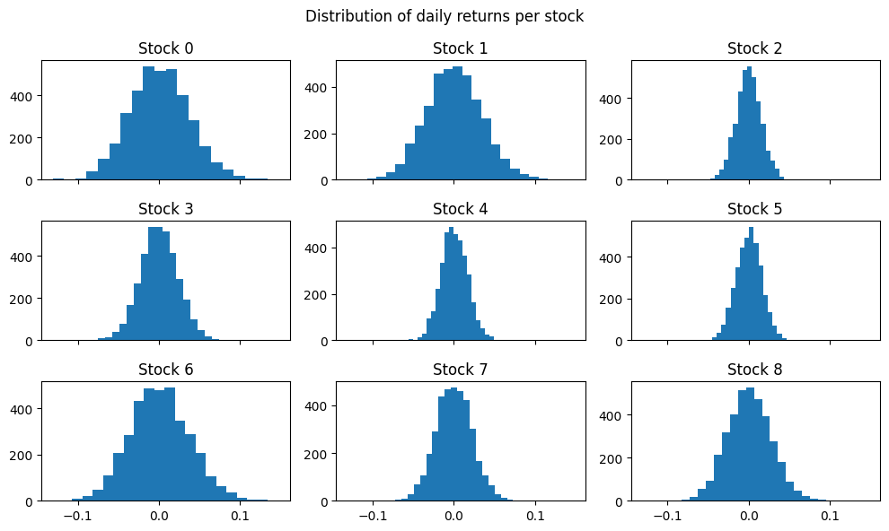
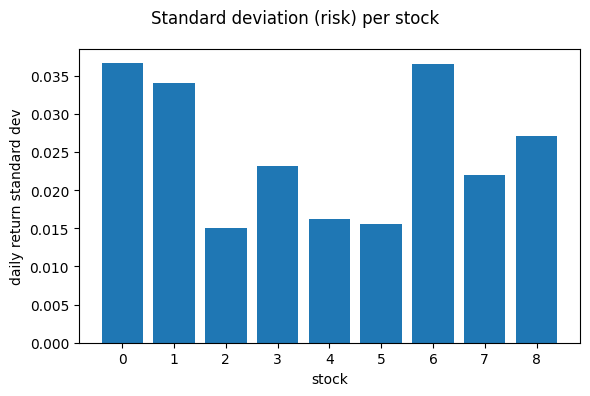
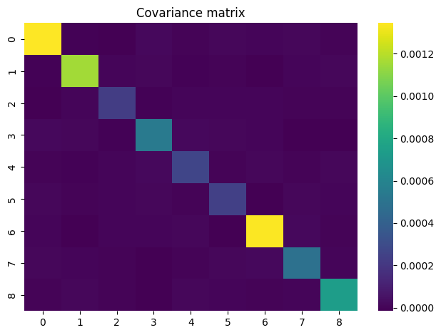
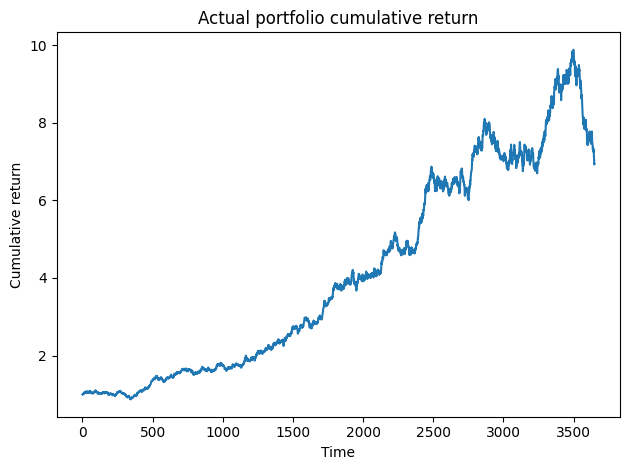
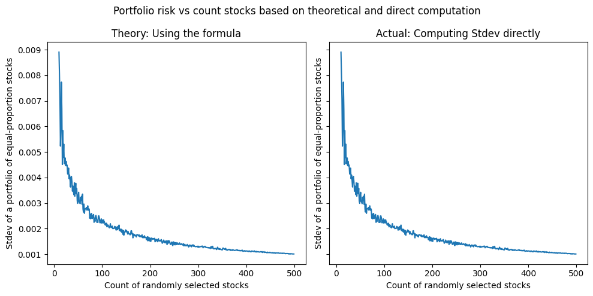

Simulating Risk of a Portfolio of Securities#
We simulate different stocks and check if the simulations align with portfolio theory. In particular, we check if by diversifying a portfolio of stocks, we do indeed get the L-curve when we plot risk vs number of stocks as predicted by the theory.
In other words, in this simulation, will we see this curve that is used in standard finance textbooks?

To explore this, we simulated N stock prices via geometric Brownian motion to represent the stock market. We simulated random correlations between stock prices as well.
The portfolio is made up of \(K < N\) randomly selected stocks. We then assume we have a portfolio of \(K\) stocks whith equal fund allocations so each stock will have an allocation of \(1/K\) of the total portfolio. We then compute the portfolio return standard deviation (risk) two ways:
A) Using the formula \(\sigma^2_{p} = \sum p_i * p_j * \sigma_{ij}\) for stock combinations \(i\) and \(j\) where if \(i = j\) then \(\sigma_{ij} = \sigma{ii} = \sigma^2_{i}\) which is the variance of returns of stock \(i\), else for \(i \neq j\), \(\sigma_{ij}\) is the covariance of returns between stocks \(i\) and \(j\)
B) We get the expected portfolio return (average of the individual returns of the K stocks) and compute the standard deviation and variance
We then plot the corresponding portfolio risk \(\sigma_p\) vs \(K\) and check if we will see the:
L-curve where risk, \(\sigma_p\) goes down as \(K\) goes up, which is fundamental in portfolio theory (shift from unique/specific risk to market/systematic risk)
Whether the theoretical computation A) will match the empirical computation B) of \(\sigma_p\)
Spoiler: Yes we see the L-curve and yes we A) exactly matches B). The math of portfolio theory checks out, supporting the idea how diversification reduces overall risk!
We define the functions#
Show code cell source
def generate_stocks(n_stocks=5,
period=365 * 10, # say X years, 1 hour granularity
plot=False,
seed=42):
# random walks for stock simulation
np.random.seed(seed)
price_matrix = np.zeros(shape=(n_stocks, period))
z_matrix = np.zeros(shape=(n_stocks, period))
stds = np.random.uniform(0.01, 0.05, size=n_stocks) # daily
mus = stds/10000 # make returns proportional to std
if plot:
plt.figure(figsize=(7, 5))
i = 0
# First stock
while True:
P0 = 1 #
delta_t = 1 # 1 day
# brownian motion
z1 = np.random.normal(0, 1, size=period)
mu, std = mus[i], stds[i]
returns = np.exp((mu - (std ** 2) / 2) * delta_t + std * np.sqrt(delta_t) * z1)
prices = P0 * np.cumprod(returns)
# make sure gain
if prices[-1] > prices[0]:
price_matrix[i, :] = prices
z_matrix[i, :] = z1
plt.plot(prices, linewidth=1, alpha=0.75)
i += 1
break
# rest of the stocks
while True:
# generate correlated stock
corr_coeff = np.random.uniform(-0.8, 0.8)
# find a random stock from the existing list
i2 = np.random.choice(range(0, i))
mu, std = mus[i2], stds[i2]
z1 = z_matrix[i2, :]
z2 = np.random.normal(0, 1, size=period) # random noise for this stock
zb = corr_coeff * z1 + np.sqrt(1 - corr_coeff ** 2) * z2
returns = np.exp((mu - (std ** 2) / 2) * delta_t + std * np.sqrt(delta_t) * zb)
prices = P0 * np.cumprod(returns)
# make sure gain
if prices[-1] > prices[0]:
price_matrix[i, :] = prices
plt.plot(prices, linewidth=1, alpha=0.75)
i += 1
if i >= n_stocks:
break
if plot:
plt.legend()
plt.xlabel("time")
plt.ylabel("price")
plt.title("Simulated stock prices in the stock market")
plt.tight_layout()
plt.show()
return price_matrix
Show code cell source
# Get only K random stocks from the universe of stocks
def compute_portfolio_risk(price_matrix, portfolio_size, plot=False, seed=42):
np.random.seed(seed)
inds = np.random.choice(range(price_matrix.shape[0]), size=portfolio_size, replace=False)
price_mtx_trunc = price_matrix[inds, :]
return_mtx = (price_mtx_trunc[:, 1:] - price_mtx_trunc[:, :-1]) / price_mtx_trunc[:, :-1]
# histograms
if plot:
fig, axs = plt.subplots(int(np.sqrt(portfolio_size)), int(np.sqrt(portfolio_size)), figsize=(10, 6), sharex=True)
axs = axs.flatten()
for i, ax in zip(range(portfolio_size), axs):
ax.set_title(f"Stock {i}")
ax.hist(return_mtx[i, :], bins=20)
plt.suptitle("Distribution of daily returns per stock")
plt.tight_layout()
plt.show()
# compute daily stdev
stdevs = np.std(return_mtx, axis=1)
if plot:
plt.figure(figsize=(6, 4))
plt.bar([str(i) for i in range(portfolio_size)], stdevs)
plt.xlabel("stock")
plt.ylabel("daily return standard dev")
plt.suptitle("Standard deviation (risk) per stock")
plt.tight_layout()
plt.show()
# build the covariance matrix (daily returns)
cov_mtx = np.cov(return_mtx)
if plot:
sns.heatmap(cov_mtx, cmap='viridis')
plt.title("Covariance matrix")
plt.tight_layout()
plt.show()
# get market portfolio variance, as computed by the theory
# Assume same proportion of allocation per stock
portfolio_var_theory = np.sum(cov_mtx * (1/portfolio_size)**2)
portfolio_std_theory = np.sqrt(portfolio_var_theory)
# compute the actual variance from the data
return_w_prop = return_mtx * 1/portfolio_size # allocation of returns
return_w_prop = return_w_prop.sum(axis=0) # sum returns across all stocks (returns can be summed up)
portfolio_std_actual = np.std(return_w_prop) # compute stdev of returns
portfolio_var_actual = portfolio_std_actual**2
if plot:
# plot the performance of the portfolio
plt.plot(np.cumprod(1+return_w_prop))
plt.xlabel("Time")
plt.ylabel("Cumulative return")
plt.title("Actual portfolio cumulative return")
plt.tight_layout()
plt.show()
if plot:
print(f"portfolio_var_theory {portfolio_var_theory:.6f}")
print(f"portfolio_var_actual {portfolio_var_actual:.6f}")
print()
print(f"portfolio_std_theory {portfolio_std_theory:.6f}")
print(f"portfolio_std_actual {portfolio_std_actual:.6f}")
return portfolio_std_theory, portfolio_std_actual
We randomly generate N stocks representing the entire stock market#
# generate a universe of stocks
n_stocks = 500
price_matrix = generate_stocks(n_stocks=n_stocks, period=365 * 10, plot=True, seed=42)
/var/folders/r0/vzjvg_0x34l0y0xm0pz7bd100000gn/T/ipykernel_64180/423271303.py:62: UserWarning: No artists with labels found to put in legend. Note that artists whose label start with an underscore are ignored when legend() is called with no argument.
plt.legend()

We visualize the risks and returns of a portfolio of 9 random stocks#
portfolio_var = compute_portfolio_risk(price_matrix, portfolio_size=9, plot=True, seed=42)




portfolio_var_theory 0.000079
portfolio_var_actual 0.000079
portfolio_std_theory 0.008890
portfolio_std_actual 0.008889
We visualize portfolio risk vs portfolio size#
We find that diversification reduces the risk of the portfolio to approach the risk of the entire market
The theoretical computation using stock return covariances matches exactly the direct computation of first getting the total return of the portfolio and getting its standard deviation
Show code cell source
# Plot the portfolio std vs count stocks
portfolio_sizes = range(10, 500)
portfolio_stds_theory = []
portfolio_stds_actual = []
for portfolio_size in portfolio_sizes:
portfolio_std_theory, portfolio_std_actual = compute_portfolio_risk(price_matrix, portfolio_size=portfolio_size, plot=False, seed=None)
portfolio_stds_theory.append(portfolio_std_theory)
portfolio_stds_actual.append(portfolio_std_actual)
Show code cell source
fig, axs = plt.subplots(1, 2, figsize=(10, 5), sharey=True)
axs[0].plot(portfolio_sizes, portfolio_stds_theory)
axs[0].set_ylabel("Stdev of a portfolio of equal-proportion stocks")
axs[0].set_xlabel("Count of randomly selected stocks")
axs[0].set_title("Theory: Using the formula")
axs[1].plot(portfolio_sizes, portfolio_stds_actual)
axs[1].set_ylabel("Stdev of a portfolio of equal-proportion stocks")
axs[1].set_xlabel("Count of randomly selected stocks")
axs[1].set_title("Actual: Computing Stdev directly")
plt.suptitle("Portfolio risk vs count stocks based on theoretical and direct computation")
plt.tight_layout()
